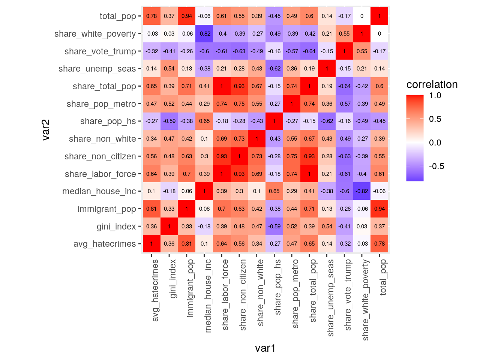
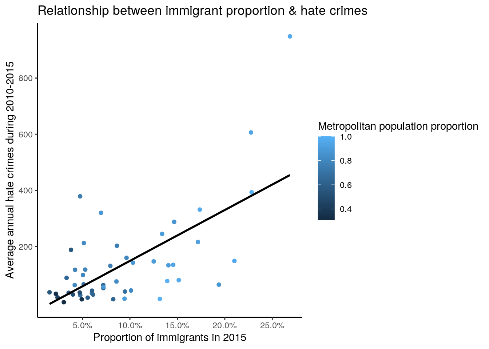
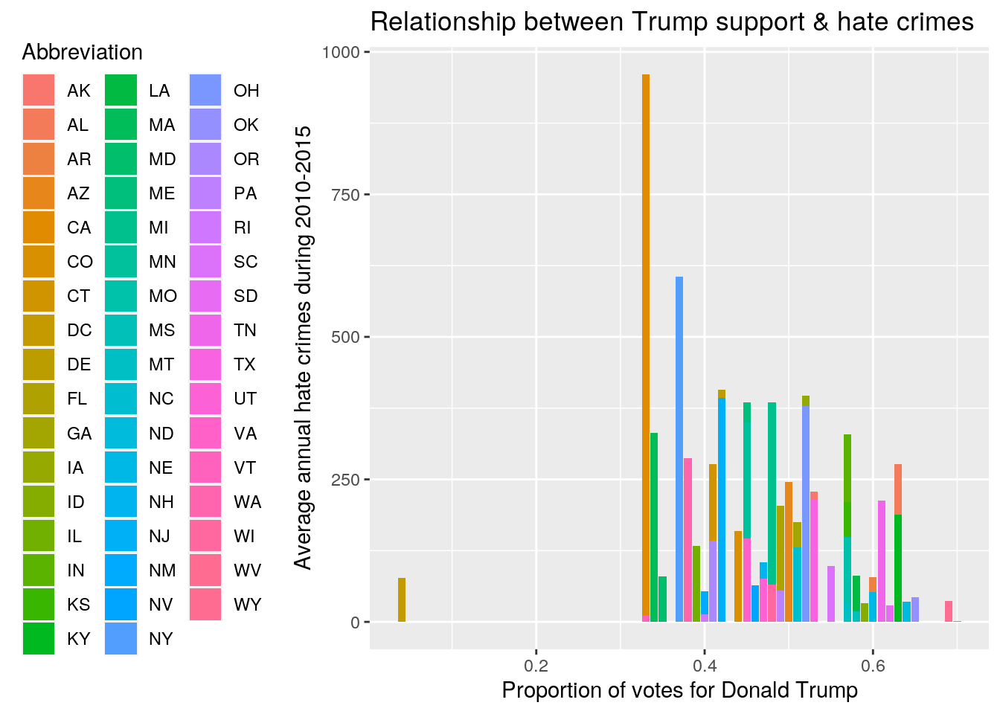
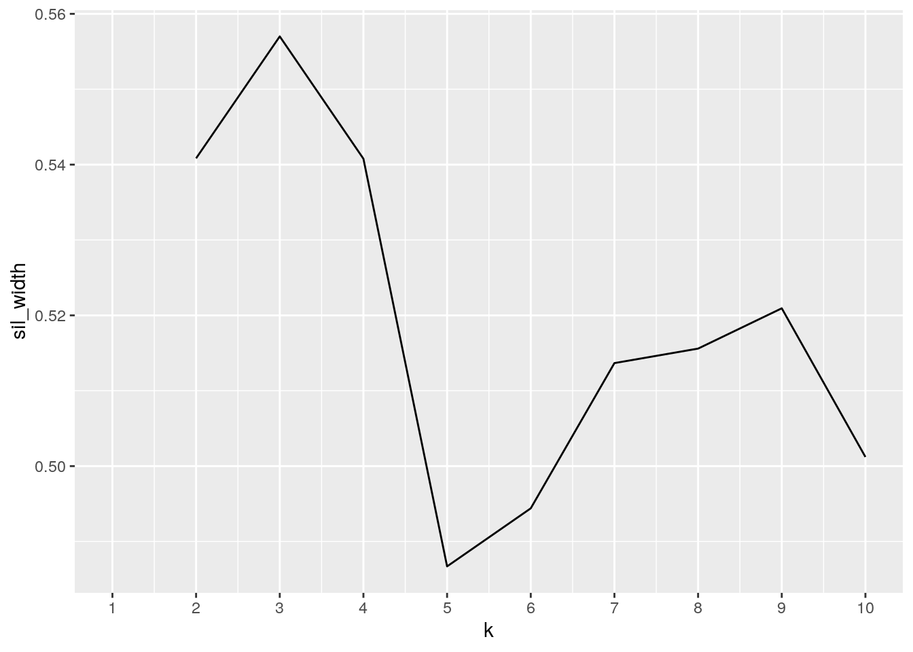
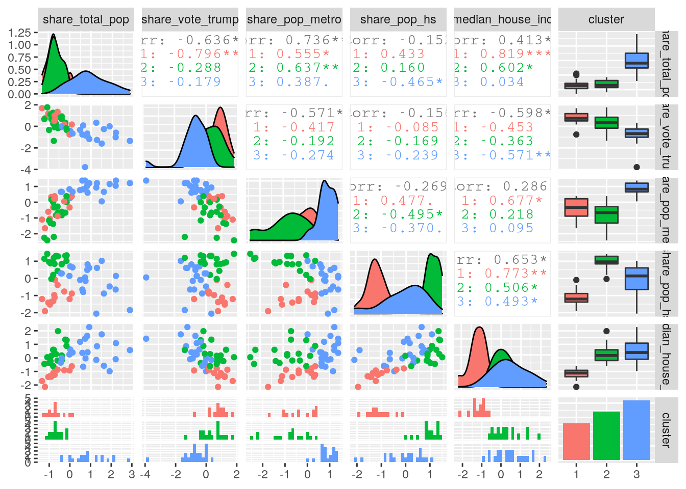
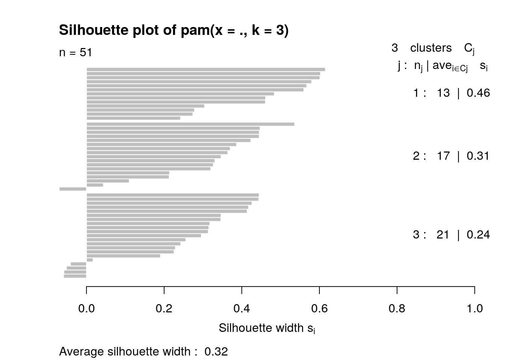

The two datasets I chose was hate_crimes and immigration. The hate_crime dataset contains 13 variables: state (state name), state_abbrev (state abbreviation), median_house_inc (median household income in 2016), share_unemp_seas (share of the population that is unemployed in 2016), share_pop_metro (share of the population that lives in metropolitan areas in 2015), share_pop_hs (share of adults 25 and older with a high-school degree in 2009), share_non_citizen (share of the population that are not U.S. citizens in 2015), share_white_poverty (share of white residents who are living in poverty in 2015), gini_index (2015), share_non_white (share of the population that is not white in 2015), share_vote_trump (share of 2016 U.S. presidential voters who voted for Donald Trump), hate_crimes_per_100k_splc (hate crimes per 100,000 population in 2016), and avg_hatecrimes_per_100k_fbi (average annual hate crimes per 100,000 population from 2010 to 2015). The immigration dataset contains 5 variables: state (state name), total_pop (total population in each state in 2015), immigrant_pop (immigrant population in each state in 2015), share_total_pop (share of the total population that is immigrant in 2015), and share_labor_force (share of labor force that is immigrant in 2015). The hate_crime dataset was obtained from R package "fivethirtyeight", and dataset immigrant was obtained from Migration Policy Institute. Hate crime is motivated by prejudice on the basis of race, religion, sexual orientation, or other grounds, and it has become a big promblem nowadays. I want to know what factors could affect the rate of hate crime in the US, besides, as a non-citizen, I want to see if the share of immigrant population plays a role in affecting hate crime, so these two datasets are very intersting to me. In my opinion, I expect that the more immigrants there are in a state, the more hate crimes will happen.
library(tidyverse)
library(fivethirtyeight)
library(cluster)
hate_crimes <- data.frame(hate_crimes)
immigration <- read_csv("immigration.csv")hate_crimes %>% pivot_longer(contains("share"), names_to = "name",
values_to = "value") %>% separate(name, into = c("stat",
"type"), sep = 6) %>% pivot_wider(names_from = type, values_from = value) %>%
separate(stat, into = c("stat", "remove"), sep = 5) %>% select(-remove)## # A tibble: 51 x 14
## state state_abbrev median_house_inc gini_index hate_crimes_per…
## <chr> <chr> <int> <dbl> <dbl>
## 1 Alab… AL 42278 0.472 0.126
## 2 Alas… AK 67629 0.422 0.144
## 3 Ariz… AZ 49254 0.455 0.225
## 4 Arka… AR 44922 0.458 0.0691
## 5 Cali… CA 60487 0.471 0.256
## 6 Colo… CO 60940 0.457 0.391
## 7 Conn… CT 70161 0.486 0.335
## 8 Dela… DE 57522 0.44 0.323
## 9 Dist… DC 68277 0.532 1.52
## 10 Flor… FL 46140 0.474 0.188
## # … with 41 more rows, and 9 more variables: avg_hatecrimes_per_100k_fbi <dbl>,
## # stat <chr>, unemp_seas <dbl>, pop_metro <dbl>, pop_hs <dbl>,
## # non_citizen <dbl>, white_poverty <dbl>, non_white <dbl>, vote_trump <dbl>*pivot_longer() put all variables containing 'share' into a single column called 'name', and their corresponding values are stored in 'value'. separate() splits the 'name' variable into two parts: 'stat' and 'type'; 'stat' represents the kind of statistics of those values (share), and 'type' represents different types of share. pivot_wider() selects different types of share and makes them individual columns with their values. The second separate() helps remove the '_' from the original 'stat'. select() removes the extra column 'remove' and gives the final data. My data is already tidy so I demonstrate the functions for tidying without actually changing the dataset. *
fulldata <- full_join(hate_crimes, immigration, by = "state")
glimpse(fulldata)## Rows: 51
## Columns: 17
## $ state <chr> "Alabama", "Alaska", "Arizona", "Arkansas…
## $ state_abbrev <chr> "AL", "AK", "AZ", "AR", "CA", "CO", "CT",…
## $ median_house_inc <int> 42278, 67629, 49254, 44922, 60487, 60940,…
## $ share_unemp_seas <dbl> 0.060, 0.064, 0.063, 0.052, 0.059, 0.040,…
## $ share_pop_metro <dbl> 0.64, 0.63, 0.90, 0.69, 0.97, 0.80, 0.94,…
## $ share_pop_hs <dbl> 0.821, 0.914, 0.842, 0.824, 0.806, 0.893,…
## $ share_non_citizen <dbl> 0.02, 0.04, 0.10, 0.04, 0.13, 0.06, 0.06,…
## $ share_white_poverty <dbl> 0.12, 0.06, 0.09, 0.12, 0.09, 0.07, 0.06,…
## $ gini_index <dbl> 0.472, 0.422, 0.455, 0.458, 0.471, 0.457,…
## $ share_non_white <dbl> 0.35, 0.42, 0.49, 0.26, 0.61, 0.31, 0.30,…
## $ share_vote_trump <dbl> 0.63, 0.53, 0.50, 0.60, 0.33, 0.44, 0.41,…
## $ hate_crimes_per_100k_splc <dbl> 0.12583893, 0.14374012, 0.22531995, 0.069…
## $ avg_hatecrimes_per_100k_fbi <dbl> 1.8064105, 1.6567001, 3.4139280, 0.869208…
## $ total_pop <dbl> 4887900, 737400, 7171600, 3013800, 395570…
## $ immigrant_pop <dbl> 162600, 60800, 960300, 143700, 10626000, …
## $ share_total_pop <dbl> 0.03325927, 0.08242591, 0.13389883, 0.047…
## $ share_labor_force <dbl> 0.044, 0.101, 0.168, 0.070, 0.330, 0.116,…full_join() keeps information from both datasets. In this case, since both datasets contain 51 observations for each state, joining by 'state' is chosen because it is the common variable.
fulldata <- fulldata %>% mutate(total_pop_in_100000 = total_pop/1e+05) %>%
mutate(avg_hatecrimes = avg_hatecrimes_per_100k_fbi * total_pop_in_100000)
fulldata %>% group_by(state) %>% arrange(avg_hatecrimes)## # A tibble: 51 x 19
## # Groups: state [51]
## state state_abbrev median_house_inc share_unemp_seas share_pop_metro
## <chr> <chr> <int> <dbl> <dbl>
## 1 Wyom… WY 55690 0.04 0.31
## 2 Verm… VT 60708 0.037 0.35
## 3 Alas… AK 67629 0.064 0.63
## 4 Rhod… RI 58633 0.054 1
## 5 Dela… DE 57522 0.049 0.9
## 6 Iowa IA 57810 0.036 0.6
## 7 Miss… MS 35521 0.061 0.45
## 8 Arka… AR 44922 0.052 0.69
## 9 New … NH 73397 0.034 0.63
## 10 Sout… SD 53053 0.035 0.51
## # … with 41 more rows, and 14 more variables: share_pop_hs <dbl>,
## # share_non_citizen <dbl>, share_white_poverty <dbl>, gini_index <dbl>,
## # share_non_white <dbl>, share_vote_trump <dbl>,
## # hate_crimes_per_100k_splc <dbl>, avg_hatecrimes_per_100k_fbi <dbl>,
## # total_pop <dbl>, immigrant_pop <dbl>, share_total_pop <dbl>,
## # share_labor_force <dbl>, total_pop_in_100000 <dbl>, avg_hatecrimes <dbl>fulldata %>% filter(immigrant_pop > mean(immigrant_pop, na.rm = T)) %>%
select(state, immigrant_pop, avg_hatecrimes)## state immigrant_pop avg_hatecrimes
## 1 Arizona 960300 244.83326
## 2 California 10626000 948.57128
## 3 Florida 4475400 148.68410
## 4 Georgia 1064100 43.34158
## 5 Illinois 1791300 133.01910
## 6 Maryland 915200 80.05608
## 7 Massachusetts 1198100 331.43189
## 8 New Jersey 2033300 393.15015
## 9 New York 4447200 606.23115
## 10 Pennsylvania 922600 55.18933
## 11 Texas 4928000 216.05805
## 12 Virginia 1065100 146.90942
## 13 Washington 1104900 287.68964fulldata %>% filter(immigrant_pop > mean(immigrant_pop, na.rm = T)) %>%
inner_join(fulldata %>% filter(avg_hatecrimes > mean(avg_hatecrimes,
na.rm = T))) %>% select(state, immigrant_pop, avg_hatecrimes)## state immigrant_pop avg_hatecrimes
## 1 Arizona 960300 244.8333
## 2 California 10626000 948.5713
## 3 Florida 4475400 148.6841
## 4 Massachusetts 1198100 331.4319
## 5 New Jersey 2033300 393.1502
## 6 New York 4447200 606.2311
## 7 Texas 4928000 216.0581
## 8 Virginia 1065100 146.9094
## 9 Washington 1104900 287.6896fulldata %>% summarize_if(is.numeric, mean, na.rm = T)## median_house_inc share_unemp_seas share_pop_metro share_pop_hs
## 1 55223.61 0.04956863 0.7501961 0.8691176
## share_non_citizen share_white_poverty gini_index share_non_white
## 1 0.05458333 0.09176471 0.4537647 0.3156863
## share_vote_trump hate_crimes_per_100k_splc avg_hatecrimes_per_100k_fbi
## 1 0.49 0.304093 2.367613
## total_pop immigrant_pop share_total_pop share_labor_force total_pop_in_100000
## 1 6415045 877035.3 0.09491105 0.1187647 64.15045
## avg_hatecrimes
## 1 136.2592fulldata %>% summarize_if(is.numeric, sd, na.rm = T)## median_house_inc share_unemp_seas share_pop_metro share_pop_hs
## 1 9208.478 0.01069814 0.1815873 0.03407324
## share_non_citizen share_white_poverty gini_index share_non_white
## 1 0.031077 0.02471484 0.02089075 0.1649152
## share_vote_trump hate_crimes_per_100k_splc avg_hatecrimes_per_100k_fbi
## 1 0.1187097 0.2527086 1.714245
## total_pop immigrant_pop share_total_pop share_labor_force total_pop_in_100000
## 1 7343301 1768897 0.06163923 0.07696846 73.43301
## avg_hatecrimes
## 1 169.1792fulldata %>% summarize_if(is.numeric, var, na.rm = T)## median_house_inc share_unemp_seas share_pop_metro share_pop_hs
## 1 84796070 0.0001144502 0.03297396 0.001160986
## share_non_citizen share_white_poverty gini_index share_non_white
## 1 0.0009657801 0.0006108235 0.0004364235 0.02719702
## share_vote_trump hate_crimes_per_100k_splc avg_hatecrimes_per_100k_fbi
## 1 0.014092 0.06386165 2.938636
## total_pop immigrant_pop share_total_pop share_labor_force
## 1 5.392406e+13 3.128996e+12 0.003799395 0.005924144
## total_pop_in_100000 avg_hatecrimes
## 1 5392.406 28621.59fulldata %>% summarize_if(is.numeric, min, na.rm = T)## median_house_inc share_unemp_seas share_pop_metro share_pop_hs
## 1 35521 0.028 0.31 0.799
## share_non_citizen share_white_poverty gini_index share_non_white
## 1 0.01 0.04 0.419 0.06
## share_vote_trump hate_crimes_per_100k_splc avg_hatecrimes_per_100k_fbi
## 1 0.04 0.0674468 0.2669408
## total_pop immigrant_pop share_total_pop share_labor_force total_pop_in_100000
## 1 577700 17500 0.01528658 0.02 5.777
## avg_hatecrimes
## 1 1.542117fulldata %>% summarize_if(is.numeric, max, na.rm = T)## median_house_inc share_unemp_seas share_pop_metro share_pop_hs
## 1 76165 0.073 1 0.918
## share_non_citizen share_white_poverty gini_index share_non_white
## 1 0.13 0.17 0.532 0.81
## share_vote_trump hate_crimes_per_100k_splc avg_hatecrimes_per_100k_fbi
## 1 0.7 1.522302 10.95348
## total_pop immigrant_pop share_total_pop share_labor_force total_pop_in_100000
## 1 39557000 10626000 0.2686242 0.33 395.57
## avg_hatecrimes
## 1 948.5713fulldata %>% summarize_if(is.numeric, quantile, na.rm = T)## median_house_inc share_unemp_seas share_pop_metro share_pop_hs
## 1 35521 0.0280 0.310 0.7990
## 2 48657 0.0420 0.630 0.8405
## 3 54916 0.0510 0.790 0.8740
## 4 60719 0.0575 0.895 0.8980
## 5 76165 0.0730 1.000 0.9180
## share_non_citizen share_white_poverty gini_index share_non_white
## 1 0.010 0.040 0.4190 0.060
## 2 0.030 0.075 0.4400 0.195
## 3 0.045 0.090 0.4540 0.280
## 4 0.080 0.100 0.4665 0.420
## 5 0.130 0.170 0.5320 0.810
## share_vote_trump hate_crimes_per_100k_splc avg_hatecrimes_per_100k_fbi
## 1 0.040 0.0674468 0.2669408
## 2 0.415 0.1427066 1.2931388
## 3 0.490 0.2261971 1.9870682
## 4 0.575 0.3569347 3.1843445
## 5 0.700 1.5223017 10.9534797
## total_pop immigrant_pop share_total_pop share_labor_force total_pop_in_100000
## 1 577700 17500 0.01528658 0.0200 5.777
## 2 1780000 122100 0.04844090 0.0590 17.800
## 3 4468400 266100 0.07203722 0.0950 44.684
## 4 7353600 869700 0.13659516 0.1665 73.536
## 5 39557000 10626000 0.26862421 0.3300 395.570
## avg_hatecrimes
## 1 1.542117
## 2 35.375139
## 3 76.155438
## 4 156.978914
## 5 948.571282cor(fulldata %>% select(where(is.numeric)), use = "pair")## median_house_inc share_unemp_seas share_pop_metro
## median_house_inc 1.00000000 -0.37672238 0.2864801
## share_unemp_seas -0.37672238 1.00000000 0.3581126
## share_pop_metro 0.28648009 0.35811260 1.0000000
## share_pop_hs 0.65349004 -0.62116767 -0.2688461
## share_non_citizen 0.30228839 0.27889879 0.7454643
## share_pop_hs share_non_citizen share_white_poverty
## median_house_inc 0.6534900 0.3022884 -0.8180450853
## share_unemp_seas -0.6211677 0.2788988 0.2094397559
## share_pop_metro -0.2688461 0.7454643 -0.3855593664
## share_pop_hs 1.0000000 -0.2770086 -0.4940083210
## share_non_citizen -0.2770086 1.0000000 -0.3897178867
## gini_index share_non_white share_vote_trump
## median_house_inc -0.17882139 0.10377533 -0.5975281
## share_unemp_seas 0.54165862 0.43184726 -0.1481921
## share_pop_metro 0.51584265 0.54767192 -0.5706947
## share_pop_hs -0.59205182 -0.43484560 -0.1556557
## share_non_citizen 0.48025744 0.73365492 -0.6311941
## hate_crimes_per_100k_splc
## median_house_inc 0.35071430
## share_unemp_seas 0.08329209
## share_pop_metro 0.16221720
## share_pop_hs 0.30894384
## share_non_citizen 0.24350661
## avg_hatecrimes_per_100k_fbi total_pop
## median_house_inc 0.31824644 -0.0564490435
## share_unemp_seas 0.07393580 0.1432693119
## share_pop_metro 0.20982658 0.4866727694
## share_pop_hs 0.16414764 -0.4525905804
## share_non_citizen 0.30089199 0.5452947762
## immigrant_pop share_total_pop share_labor_force
## median_house_inc 0.06048281 0.4132442 0.38733248
## share_unemp_seas 0.13064583 0.1858202 0.20727771
## share_pop_metro 0.43546772 0.7360563 0.74433865
## share_pop_hs -0.38275526 -0.1517060 -0.17995808
## share_non_citizen 0.63051296 0.9305907 0.93319130
## total_pop_in_100000 avg_hatecrimes
## median_house_inc -0.0564490435 0.10207556
## share_unemp_seas 0.1432693119 0.13896817
## share_pop_metro 0.4866727694 0.47314726
## share_pop_hs -0.4525905804 -0.27060728
## share_non_citizen 0.5452947762 0.56271844
## [ reached getOption("max.print") -- omitted 12 rows ]Two new columns are created by mutate(). total_pop_in_100000 is created by dividing the total_pop (total population) by 100000 to show the population in million. avg_hatecrimes is created by multiplying total population in million and avg_hatecrimes_per_100k_fbi (average annual hatecrime rate), which gives the average total hatecrimes per year. Wyoming has the lowest average hatecrimes per year (1.542 per year), and California has the highest average hatecrimes per year (948.571 per year). The 13 states that have more immigrant population are Arizona, California, Florida, Georgia, Illinois, Maryland, Massachusetts, New Jersey, New York, Pennsylvania, Texas, Virginia, and Washington. Among these states, Arizona, California, Florida, Massachusetts, New Jersey, Texas, Virginia, and Washington also have an above-average annual hatecrimes. The mean, standard deviation, variance, minimum, maximum, and quantiles of each numeric variable are listed above. The correlations of each variable are also calculated and stated above. It can be seen from the correlations that immigrant population is strongly correlated with annual hatecrimes.
library(ggplot2)
cormat <- fulldata %>% select_if(is.numeric) %>% select(-total_pop_in_100000,
-hate_crimes_per_100k_splc, -avg_hatecrimes_per_100k_fbi) %>%
cor(use = "pair")
cormat %>% as.data.frame %>% rownames_to_column("var1") %>% pivot_longer(-1,
"var2", values_to = "correlation") %>% ggplot(aes(var1, var2,
fill = correlation)) + geom_tile() + scale_fill_gradient2(low = "blue",
mid = "white", high = "red") + geom_text(aes(label = round(correlation,
2)), color = "black", size = 2) + theme(axis.text.x = element_text(angle = 90,
hjust = 1)) + coord_fixed()
ggplot(fulldata, aes(x = share_total_pop, y = avg_hatecrimes)) +
geom_point(aes(color = share_pop_metro)) + theme_classic() +
theme(legend.position = "right") + geom_smooth(se = FALSE,
method = "lm", col = "black") + labs(x = "Proportion of immigrants in 2015",
y = "Average annual hate crimes during 2010-2015", title = "Relationship between immigrant proportion & hate crimes",
color = "Metropolitan population proportion") + scale_x_continuous(breaks = seq(0.05,
0.3, 0.05), labels = scales::percent) + scale_y_continuous(breaks = seq(200,
1000, 200))
ggplot(fulldata, aes(x = share_vote_trump, y = avg_hatecrimes)) +
geom_bar(aes(y = avg_hatecrimes, fill = state_abbrev), stat = "summary") +
theme(legend.position = "left") + labs(x = "Proportion of votes for Donald Trump",
y = "Average annual hate crimes during 2010-2015", title = "Relationship between Trump support & hate crimes",
fill = "Abbreviation") From the correlation heatmap, it can be seen that total population has a correlation of 0.94 with immigrant population; proportion of immigrants has a correlation of 1 with immigrant's share of labor force and a correlation of 0.93 with proportion of non-citizen; immigrant population has a correlation of 0.81 with average annual hatecrimes, which means that annual hatecrimes is strongly correlated with immigrant populations in a state. Based on the graph "Relationship between immigrant proportion & hate crimes", the average annual hatecrimes increases with the proportion of immigrants in a state and the proportion of the population that lives in metropolitan areas. According to the graph "Relationship between Trump support & hate crimes", the average annual hatecrimes decreases with more votes for Donald Trump.
pam_dat <- fulldata %>% select(share_total_pop, share_vote_trump,
share_pop_metro, share_pop_hs, median_house_inc)
sil_width <- vector()
for (i in 2:10) {
pam_fit <- pam(pam_dat, k = i)
sil_width[i] <- pam_fit$silinfo$avg.width
}
ggplot() + geom_line(aes(x = 1:10, y = sil_width)) + scale_x_continuous(name = "k",
breaks = 1:10)
final <- fulldata %>% select(share_total_pop, share_vote_trump,
share_pop_metro, share_pop_hs, median_house_inc) %>% scale %>%
as.data.frame
pam1 <- final %>% pam(3)
final <- final %>% mutate(cluster = as.factor(pam1$clustering))
library(GGally)
ggpairs(final, aes(color = cluster))
plot(pam1, which = 2) The PAM clustering results show that based on the 5 variables: share_total_pop, share_vote_trump, share_pop_metro, share_pop_hs, and median_house_inc, these 51 states could be put into 3 clusters. Cluster 1 (red) has a low share of immigrants in population, high share of people supporting Trump, median share of people living in metropolitan areas, low share of adults 25 and older with a high-school degree, and low median household income. Cluster 2 (green) has a similar share of immigrants in population with cluster 1, median share of people supporting Trump, high share of people living in metropolitan areas, median share of adults 25 and older with a high-school degree, and high median household income. Cluster 3 (blue) has a high share of immigrants in population, low share of people supporting Trump, high share of people living in metropolitan areas, median share of adults 25 and older with a high-school degree, and high median household income. The average silhouette width is 0.32, which means that this clustering structure is weak and could be artificial.